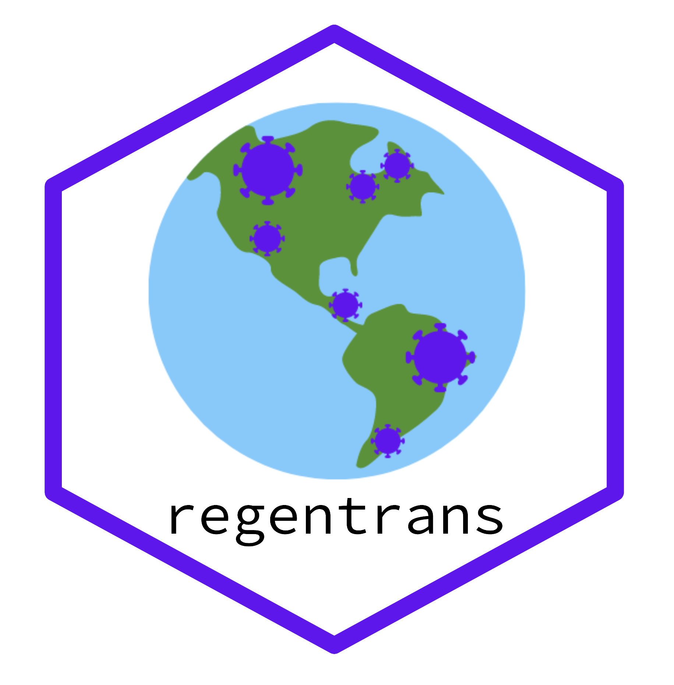

Website: https://snitkin-lab-umich.github.io/regentrans/
Preprint: https://www.medrxiv.org/content/10.1101/2021.07.25.21261097v1
regentrans can be installed using the command devtools::install_github('Snitkin-Lab-Umich/regentrans') in R
Examples of how to interrogate all of the questions in the table below can be found in the introductory vignette.
Questions regentrans can help investigate:
| Question | Method | regentrans function(s) | Required Data | Optional Data |
|---|---|---|---|---|
| How do you choose pairwise SNV distance thresholds? | Fraction of intra-facility pairs for different pairwise SNV distances | get_frac_intra() |
output of get_pair_types()
|
|
| Is transmission occurring within and/or between locations? | Phylogenetic clustering of isolates from the same location | get_clusters() |
Phylogenetic tree, isolate location information | |
| Pairwise SNV distances within and between facilities | get_pair_types() |
A pairwise SNV distance matrix (can be created using ape::dist.dna() on fasta file of variants), isolate location information |
||
| What locations is transmission occurring within/between? | Population-level similarity between locations (Fsp) | get_facility_fsp() |
Fasta file of variants, isolate location information | |
| Number of closely related pairs within and between facilities | Plot code in vignette | |||
| Have transmission dynamics changed over time? | Methods above but split over time | |||
| Is transmission occurring along paths of higher patient/person flow? | Compare patient/person flow between locations to inter-location pairwise SNV distances or Fsp | get_patient_flow() |
Patient transfer network edge matrix | |
| Compare patient/person flow between locations to populatoin-level similarity between locations |
get_patient_flow(), get_facility_fsp()
|
Patient transfer network, fasta file of variants, isolate location information | ||
| Are there any observable geographic trends in prevalence/transmission? | Visualize prevalence and closely related pairs or Fsp | Plot code in vignette | Geographic locations of each facility, patient transfer network, summary metric of genomic similarity |
Please open an issue or contact Evan Snitkin (esnitkin@umich.edu) with any questions.